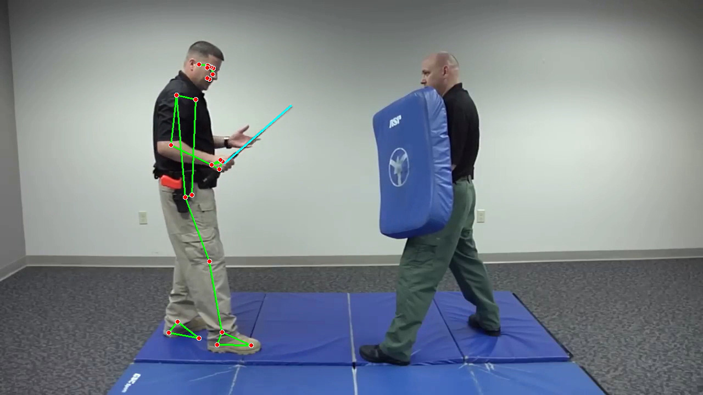
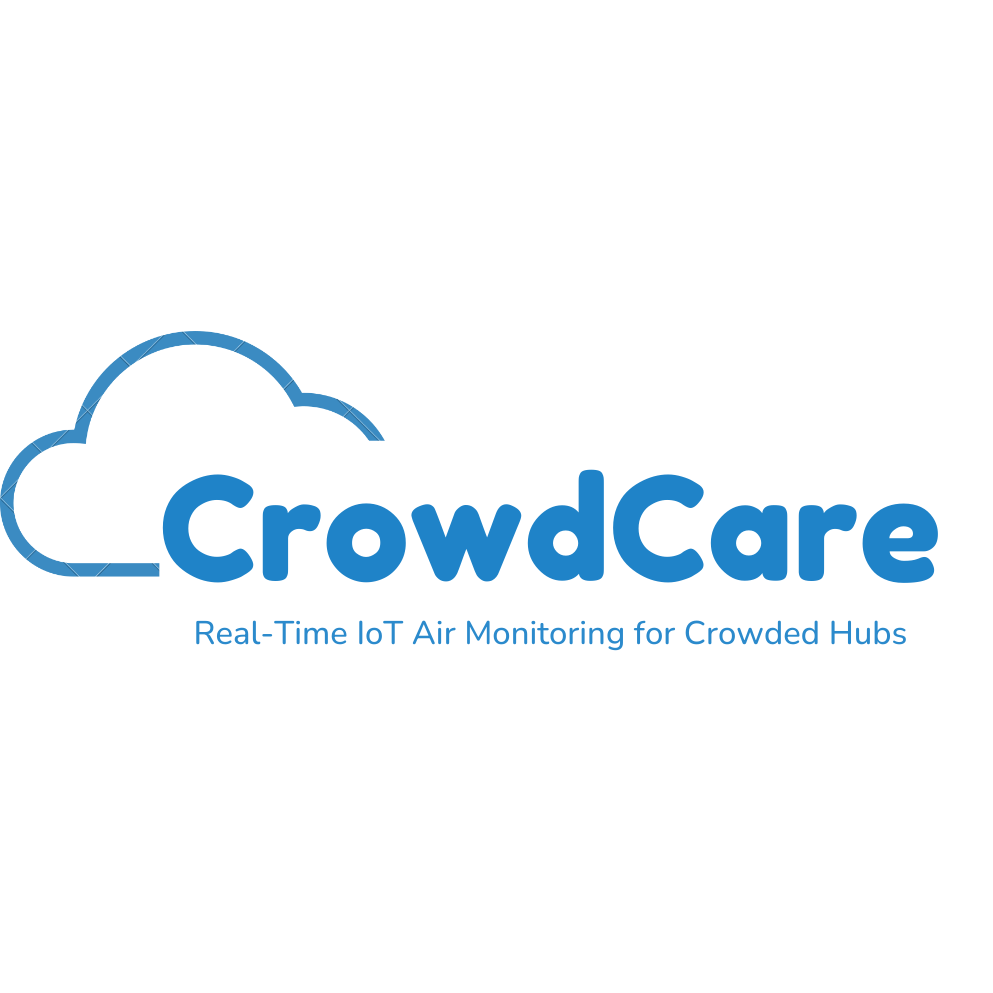
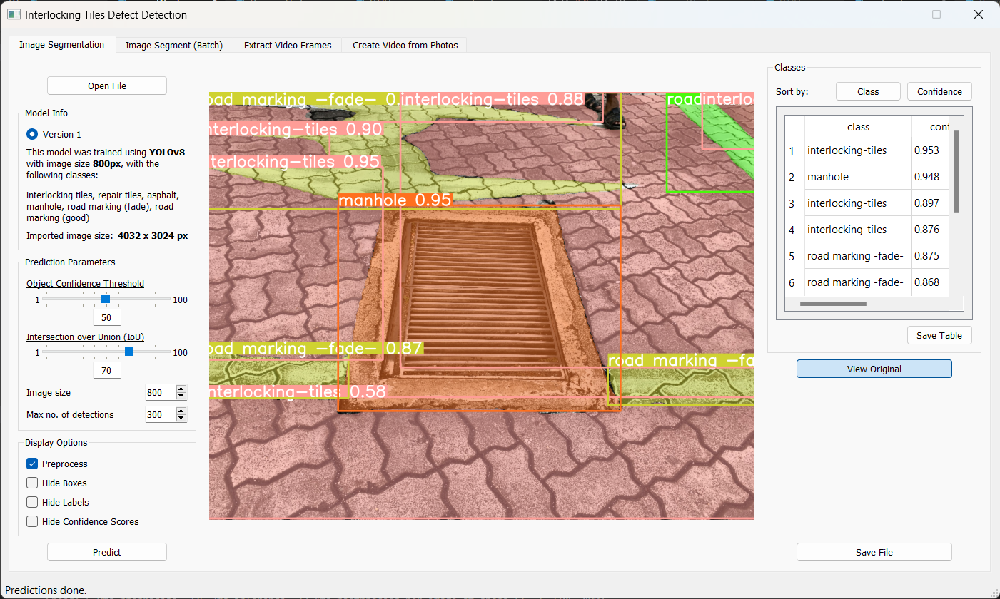
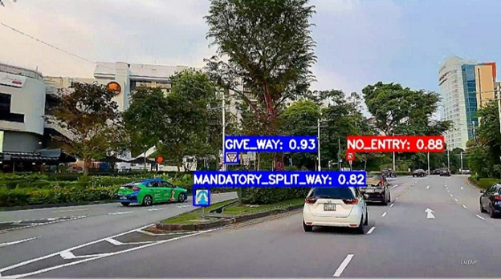

Projects

AI Combat Manikin
⭐Featured
Computer Vision | PyTorch | Intel RealSense
Developed a vision model simulating real-world combat scenarios for interactive training.

CloudCare
IoT | K3s | Arduino
Developed an IoT system for real-time public health monitoring, using HiveMQ and ESP32 modules for data collection and actuator triggers. The system leverages K3s on Raspberry Pi for scalable, automated management of containers.

Interlocking Tiles Defect Detection GUI
Computer Vision | Python | YOLOv8
A no-code interface leveraging YOLOv8 for efficient defect detection.

Road Sign Detection System
Computer Vision | PyTorch | OpenCV
A robust solution designed to recognize Singapore road signs for autonomous vehicles.